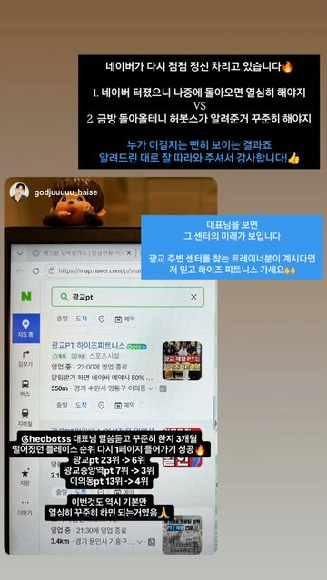

60%
전국 10곳 중 6곳
최근 30일 안에 새 리뷰가 한 건도 없던 곳
그중 전체의 네 곳 중 하나는 반년이 넘도록 멈춰 있습니다.
전국 28,200곳 · 직접 수집 · 같은 잣대
흔한 조언을 전국 28,200곳에 대고 하나씩 검증했습니다. 걸러 내고 남은 것만 「할 것」에 올립니다.
검증 · 네이버 플레이스 공개 정보
60%
전국 10곳 중 6곳
그중 전체의 네 곳 중 하나는 반년이 넘도록 멈춰 있습니다.
19.7%
밖에 쓴 글이 있는 27,139곳 중 5,349곳
이 5,349곳은 방문자 리뷰가 나머지의 2.3배였습니다. 누가 쓰느냐가 갈림길이었습니다.
36%
전국 28,200곳 중 10,235곳
답글을 다는 곳도 열 건 중 세 건에만 답니다.
50%
전국 28,200곳 중 14,125곳
가격을 안 적어 둔 곳도 46%였습니다.
8칸
플레이스 세팅 10칸 중 채운 칸 중앙값
넷 중 하나는 절반도 못 채웠습니다. 채우는 데 드는 돈은 0원입니다.
34%
체험단·기자단 글쓴이 중
한 번 쓰는 사람 열 명보다 계속 쓰는 사람 한 명이 셉니다.
걸러 낸 조언
순위 차이 100 중 이 조언이 설명하는 것은 0.2였습니다. 이런 조언은 저희가 먼저 뺐습니다.
인스타그램으로 직접 보내 주신 것 · 개별 사례
사진을 누르면 보내 주신 분의 계정으로 갑니다

@park_coach_h.i.t · 2달

@broad_minded94 · 7일

@godjuuuuu_haise · 3개월

@sheep.coach · 교육 다음 날부터

@shoulder_hak · 7개월

@tz_h.i.t · 2026.6.10~7.10